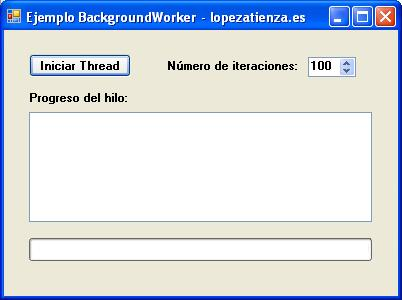

En este ejemplo abordo uno de los principales problemas que nos podemos encontrar al tratar de copiar un archivo pesado, enviar un correo con documentos adjuntos, carga de datos de una consulta sql compleja, entre otras, y es la congelación de
la aplicación mientras se realiza un proceso, dando una mala imagen de la aplicación cuando realmente es eficiente pero realmente a quién no le gusta que se le muestre un porcentaje del proceso, el tiempo es oro.
No hay requerimientos especiales para trabajar con el proyecto
Description
El proyecto resuelve el problema de la inevitable congelación de las aplicaciónes a la hora de realizar un proceso que requiera de un tiempo en ejecutarse, copiar un archivo, enviar un correo con Attachments, una carga de datos compleja entre otras funciones, gracias al control BackGroundWorker.
Este control permite que el formulario o control ejecute operaciones de forma asíncrona (en segundo plano).
Ya que el control BackGroundWorker está basados en Threads, no podremos acceder a controles que pertenezcan a la UI, puesto que puede provocar una excepción al tratar de acceder a controles que no fueron instanciados en el propio Thread.
Para poder paliar este problema en el ejemplo muestro una manera, y es mediante Delegates.
Los Delegates se utilizan para implementar métodos de devolución de llamada (callbacks), esenciales para programar procesamiento asíncrono o insertar código de cliente.

Public Class frmPrincipal
Private cuenta As Integer = 100
Private Sub btnIniciar_Click(ByVal sender As System.Object, ByVal e As System.EventArgs) Handles btnIniciar.Click
Try
Me.btnIniciar.Enabled = False
cuenta = Me.NumericUpDown1.Value
Me.BackgroundWorker1.RunWorkerAsync()
Catch ex As Exception
MessageBox.Show("Excepción controlada: " & ex.Message, "Error", MessageBoxButtons.OK, MessageBoxIcon.Error)
End Try
End Sub
Delegate Sub AddNumeroDelegate(ByVal number As Integer)
Private Sub AddNumero(ByVal number As Integer)
If txtProgreso.InvokeRequired Then
txtProgreso.Invoke(New AddNumeroDelegate(AddressOf AddNumero), number)
Else
txtProgreso.AppendText("Elemento " & (number + 1).ToString() & " procesandose.." + Environment.NewLine)
End If
End Sub
Private Sub BackgroundWorker1_DoWork(ByVal sender As System.Object, ByVal e As System.ComponentModel.DoWorkEventArgs) Handles BackgroundWorker1.DoWork
Try
Dim i As Integer
While i < cuenta
BackgroundWorker1.ReportProgress(100 * i / cuenta, "Procesando (" & i & "/" & cuenta & ") elementos...")
AddNumero(i)
Threading.Thread.Sleep(100)
i += 1
End While
BackgroundWorker1.ReportProgress(100, "Completado!")
e.Result = True
Catch ex As Exception
e.Result = False
End Try
End Sub
Private Sub BackgroundWorker1_RunWorkerCompleted(ByVal sender As System.Object, ByVal e As System.ComponentModel.RunWorkerCompletedEventArgs) Handles BackgroundWorker1.RunWorkerCompleted
Try
Me.btnIniciar.Enabled = True
Catch ex As Exception
Me.btnIniciar.Enabled = True
MessageBox.Show("Excepción controlada: " & ex.Message, "Error", MessageBoxButtons.OK, MessageBoxIcon.Error)
End Try
End Sub
Private Sub BackgroundWorker1_ProgressChanged(ByVal sender As System.Object, ByVal e As System.ComponentModel.ProgressChangedEventArgs) Handles BackgroundWorker1.ProgressChanged
Try
ProgressBar1.Value = e.ProgressPercentage
lblEstado.Text = e.UserState
Catch ex As Exception
MessageBox.Show("Excepción controlada: " & ex.Message, "Error", MessageBoxButtons.OK, MessageBoxIcon.Error)
End Try
End Sub
End Class
Public Class frmPrincipal Private cuenta As Integer = 100 Private Sub btnIniciar_Click(ByVal sender As System.Object, ByVal e As System.EventArgs) Handles btnIniciar.Click Try Me.btnIniciar.Enabled = False cuenta = Me.NumericUpDown1.Value Me.BackgroundWorker1.RunWorkerAsync() Catch ex As Exception MessageBox.Show("Excepción controlada: " & ex.Message, "Error", MessageBoxButtons.OK, MessageBoxIcon.Error) End Try End Sub Delegate Sub AddNumeroDelegate(ByVal number As Integer) Private Sub AddNumero(ByVal number As Integer) If txtProgreso.InvokeRequired Then txtProgreso.Invoke(New AddNumeroDelegate(AddressOf AddNumero), number) Else txtProgreso.AppendText("Elemento " & (number + 1).ToString() & " procesandose.." + Environment.NewLine) End If End Sub Private Sub BackgroundWorker1_DoWork(ByVal sender As System.Object, ByVal e As System.ComponentModel.DoWorkEventArgs) Handles BackgroundWorker1.DoWork Try Dim i As Integer While i < cuenta BackgroundWorker1.ReportProgress(100 * i / cuenta, "Procesando (" & i & "/" & cuenta & ") elementos...") AddNumero(i) Threading.Thread.Sleep(100) i += 1 End While BackgroundWorker1.ReportProgress(100, "Completado!") e.Result = True Catch ex As Exception e.Result = False End Try End Sub Private Sub BackgroundWorker1_RunWorkerCompleted(ByVal sender As System.Object, ByVal e As System.ComponentModel.RunWorkerCompletedEventArgs) Handles BackgroundWorker1.RunWorkerCompleted Try Me.btnIniciar.Enabled = True Catch ex As Exception Me.btnIniciar.Enabled = True MessageBox.Show("Excepción controlada: " & ex.Message, "Error", MessageBoxButtons.OK, MessageBoxIcon.Error) End Try End Sub Private Sub BackgroundWorker1_ProgressChanged(ByVal sender As System.Object, ByVal e As System.ComponentModel.ProgressChangedEventArgs) Handles BackgroundWorker1.ProgressChanged Try ProgressBar1.Value = e.ProgressPercentage lblEstado.Text = e.UserState Catch ex As Exception MessageBox.Show("Excepción controlada: " & ex.Message, "Error", MessageBoxButtons.OK, MessageBoxIcon.Error) End Try End Sub End Class
No hay información adicional.